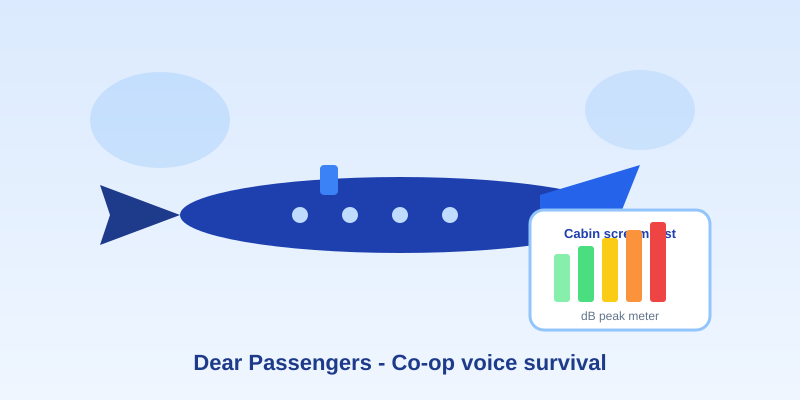

Dear Passengers Co-Op: Release Date, Gameplay & Mic Survival Guide
Updated Jul 15, 2026 • 11 min read
The trailer barely finished loading before Discord started yelling about it. Dear Passengers—the chaotic co-op airline sim from Ukrainian studio Flexus—just vaulted onto Steam wishlists and Google Trends as the next “friendslop” obsession: physics ragdolls, cabin disasters, and voice chat that will absolutely peak.
This guide covers the Dear Passengers release date, co-op gameplay, and how to play with friends—then the part a sound-meter site is actually good at: measuring your scream peaks and tuning Discord so mic peaking doesn’t take your crew down before the plane does.
Quick links: Steam page · Free online sound meter (cabin scream test) · Phone mic calibration guide
What is Dear Passengers?
Dear Passengers is a physics-based multiplayer adventure where you and your friends staff the world’s worst airline. One of you flies. Everyone else keeps the cabin from collapsing into a YouTube blooper reel: serve drinks, wrangle cargo, stop one small problem from becoming a full disaster.
Steam’s own pitch is brutal and honest: the plane is falling apart, the cargo is often illegal, and passenger safety barely makes the list. Before takeoff you pick risky passengers and high-paying cargo. Mid-flight you get turbulence, air pockets, and whatever else Flexus has queued to ruin your route. Not every passenger stays onboard. Not every “solution” is elegant.
- Developer / publisher: Flexus (Kyiv-based studio; first PC title after a long mobile-idle résumé)
- Genre tags: Online Co-op, Comedy, Physics, First-Person, Indie
- Modes: Single-player and online co-op
- Platform (announced): PC via Steam (2026)
- Vibe check: Think “Peak meets airplane,” with friendslop energy—funny until your voice chat clips
Dear Passengers release date (2026)
Flexus lists a planned 2026 release on Steam. There is no exact day yet. That uncertainty is normal for trailer-week announcements—wishlist the game so Steam notifies you when a demo, Gamescom showing, or fixed launch date appears.
Public reporting around the announce also mentioned a demo path toward Gamescom and a later public demo, plus localizations that include English, Ukrainian, Simplified Chinese, Japanese, Turkish, and Arabic. Treat those as “confirmed where Steam says so,” and expect the checklist to grow closer to launch.
| Question | Current answer |
|---|---|
| Exact Dear Passengers release date? | TBA — window is 2026 on Steam |
| Console versions? | Not announced |
| Demo? | Studio has discussed Gamescom / later public demo plans |
| Cross-play? | Not disclosed yet |
Dear Passengers gameplay: how the chaos works
From the Steam description and trailer footage, sessions revolve around a clear loop:
- Build the flight. Choose passengers and cargo. Bigger payout usually means bigger trouble.
- Split roles. One pilot in the cockpit; cabin crew handle service, safety, and damage control.
- Survive the physics. Turbulence throws bodies, luggage, and “definitely not a live animal” cargo across the aisle.
- Prioritize triage. Stop cascading disasters before the flight becomes a total write-off—or a meme.
That’s why the internet instantly filed it next to other viral co-op messes. The gameplay isn’t about perfect flight sims; it’s about shared failure that still feels heroic if you land with enough passengers conscious to file a complaint.
How to play Dear Passengers with friends
Official online co-op is on the Steam feature list. Until launch, your prep list is short:
- Wishlist Dear Passengers on Steam so the whole squad gets the same notify ping.
- Agree on voice: Discord is the default for most PC friend groups (in-game chat is listed as an interactive element, but dedicated VC is still what most crews will use).
- Assign roles early: pilot vs. cabin leads. Friendslop dies when four people all sprint for the fire extinguisher.
- Check Steam’s published PC specs so the weakest laptop isn’t the emergency that downs the flight.
Minimum PC specs (Steam): Windows 10 64-bit, Intel Core i5 @ 2.5 GHz (or equivalent), 8 GB RAM, GTX 1060 / RX 6600 XT class GPU, DirectX 12, ~4 GB storage. Expect these to shift closer to launch.
Why friendslop games like Dear Passengers destroy microphones
Physics + surprises = involuntary vocal reactions. Crocodile-in-the-aisle energy. Engines that take bird-strike pride. Passengers yeeted toward the hatch. Your throat does not wait for Discord’s soft limiter.
When a yell exceeds what your mic (or Discord’s digital gain chain) can handle, you get peaking / clipping: the waveform flattens and turns into a sharp, tearing buzz. Teammates don’t hear “urgent callout”—they hear a smoke alarm with opinions. That’s entertainment… once. On flight five, it’s a mute button.
Cabin Scream Test: measure your scream decibels (free)
Before launch week, turn the hype into a five-minute crew ritual. Use our browser-based online decibel meter—no install—and run the Cabin Scream Test:
- Open the real-time sound meter and allow mic access.
- Sit at your normal gaming distance from the headset or desk mic.
- Read a calm cabin announcement for 5 seconds (your “normal” baseline).
- Simulate one mid-flight freakout yell—same as you’d do when cargo escapes.
- Note both the average and the peak dB reading.
| Peak level (approx.) | Cabin translation | What to do |
|---|---|---|
| 60–70 dB | Normal crew radio | You’re fine. Keep Discord sensitivity near where speaking keys cleanly. |
| 80–90 dB | Turbulence turbulence | Turn off auto sensitivity; pull gain down a notch. |
| 100+ dB | “There’s a dinosaur in 12C” | Disable mic boost, sit farther back, enable noise reduction / compression. |
Ready for boarding? Measure first, scream later.
Open the Online Sound MeterPhone/browser meters are reference-only—great for relative scream peaks and Discord tuning, not courtroom SPL claims. See our accurate measurement guide.
Discord & Steam voice settings to stop mic peaking
1. Kill (or tame) Automatic Gain Control
In Discord: User Settings → Voice & Video → Advanced. Automatic Gain Control can pump quiet speech and shove scream peaks into the red. Many co-op players prefer it off once they’ve set a manual input level.
2. Set input sensitivity manually
Don’t leave sensitivity on auto. Speak at normal volume, then do one controlled yell. Nudge the slider so talk opens the gate cleanly while the scream doesn’t peg the meter into brick-wall clipping. Use the peak you saw on the online sound meter as a gut check—if your yell smashed 100+ dB at the desk, Discord needs more headroom, not more boost.
3. Turn on Krisp / noise suppression
Keyboard smashes, cup throws, and “why is the fire extinguisher so loud” physics can hitchhike onto your stream. Noise suppression won’t fix a clipped yell by itself, but it cleans the non-vocal wreckage between disasters.
4. Hardware > hope: mic boost and distance
On Windows, open Sound settings → your microphone → additional device properties, and dial Microphone Boost down (often to 0 dB). Move the boom mic a finger-width farther from your mouth. Software limiters help; physics still wins.
Want a more careful phone/device workflow for everyday noise checks (beyond gaming)? Keep our phone decibel meter calibration guide bookmarked.
FAQ
Is Dear Passengers out yet?
No. It’s announced for PC/Steam in 2026 with no locked calendar date at the time of writing.
How many players for co-op?
Steam markets online co-op and role split (pilot vs. cabin). Exact party size caps weren’t spelled out on the store page yet—watch the Steam news feed as Flexus publishes details.
Do I need a good mic?
You need a controlled mic more than an expensive one. A calibrated cheap headset beats a boosted studio condenser that eats Discord alive.
Ready to join the worst flight crew?
Dear Passengers is still boarding—and that’s exactly when good pages get indexed. Wishlist it, draft your crew roles, and share this guide with whoever usually screams first. When the demo or launch day hits, you’ll already know your scream peak, your Discord slider position, and which friend needs to sit farther from their Blue Yeti.
Ears first. Then the crocodile. Safe (enough) travels.